<!DOCTYPE html>
<html lang="en">
  <head>
    <meta charset="utf-8" />
    <meta name="viewport" content="width=device-width, initial-scale=1.0, maximum-scale=1.0, user-scalable=no" />

    <title>Cumulus</title>
    <link rel="shortcut icon" href="./../../../favicon.ico" />
    <link rel="stylesheet" href="./../../../dist/reset.css" />
    <link rel="stylesheet" href="./../../../dist/reveal.css" />
    <link rel="stylesheet" href="./../../../assets/styles/polkadot-theme.css" id="theme" />
    <link rel="stylesheet" href="./../../../css/highlight/shades-of-purple.css" />

    <link rel="stylesheet" href="./../../.././assets/styles/custom-classes.css" />
    <link rel="stylesheet" href="./../../.././assets/styles/polkadot-theme-base.css" />
    <link rel="stylesheet" href="./../../.././assets/styles/PBA-theme.css" />
    <link rel="stylesheet" href="./../../.././plugin/design-system/index.css" />

  </head>
  <body class="site">
    <header class="site-header">
      <a href="">
        
      </a>
      
    </header>
    <main class="site-reveal reveal">
      <article class="slides">
        <section  data-markdown><script type="text/template">

# Cumulus
</script></section><section  data-markdown><script type="text/template">
## Outline

1. [What is Cumulus?](#what-is-cumulus)
1. [Cumulus Validation Blob](#cumulus-validation-blob)
1. [Cumulus on the Node Side](#cumulus-on-the-node-side)
1. [Transform Solo to Parachain](#transform-solo-to-parachain)
</script></section><section  data-markdown><script type="text/template">
# What is Cumulus?
</script></section><section  data-markdown><script type="text/template">
## What is Cumulus?


<aside class="notes"><ul>
<li>Substrate is a framework for building blockchains</li>
<li>But only solo chains</li>
<li>Split into runtime/node side</li>
</ul>
</aside></script></section><section  data-markdown><script type="text/template">
## What is Cumulus?


</script></section><section  data-markdown><script type="text/template">
## What is Cumulus?



<aside class="notes"><ul>
<li>Polkadot makes uses of Substrate</li>
<li>Node and runtime are build on the generic types of Substrate</li>
<li>These generic types and Polkadot specific types are used to &quot;form&quot; Polkadot</li>
<li>Functionality like the Parachains Protocol is living entirely in Polkadot</li>
</ul>
</aside></script></section><section  data-markdown><script type="text/template">
## What is Cumulus?


<aside class="notes"><ul>
<li>Cumulus uses the generic types of Substrate</li>
<li>These generic types/interfaces are extended to make them work with/for Parachains</li>
<li>Polkadot itself is providing APIs that are used by Cumulus to implement the Substrate interfaces/types</li>
<li>SDK for building substrate-based Parachains</li>
</ul>
</aside></script></section><section  data-markdown><script type="text/template">
# Cumulus Validation Blob
</script></section><section  data-markdown><script type="text/template">
## Polkadot requirements

- Polkadot requires a validation blob for verifying Parachain state transitions
- This blob is required to be a valid Wasm binary that exposes the `validate_block` function
- Wasm runtimes are deeply baked into the Substrate core protocol
- The Substrate runtime is the state transition function
</script></section><section  data-markdown><script type="text/template">
## Verify a State Transition

- A Substrate chain verifies a Block state transition on import
- Importing a block is done using `execute_block`
- Executing a block means to execute the entire block with all transactions
- The input header must match the header that is the result of executing the block
- This ensures that the storage root, the extrinsic root, etc., are correct
</script></section><section  data-markdown><script type="text/template">
## "The Trick"

- Reuse the substrate-based runtime
- Augment the runtime with the `validate_block` function
- The validation blob stored on the relay chain & the runtime code blob stored in the Parachain state are the same
</script></section><section  data-markdown><script type="text/template">
## Cumulus Validation Blob

```rust
fn validate_block(input: InputParams) -> Output {


}
```
</script></section><section  data-markdown><script type="text/template">
## Cumulus Validation Blob

```rust
fn validate_block(input: InputParams) -> Output {
    // First let's initialize the state
    let state = input.storage_proof.into_state().expect("Storage proof invalid");


}
```
</script></section><section  data-markdown><script type="text/template">
## Cumulus Validation Blob

```rust
fn validate_block(input: InputParams) -> Output {
    // First let's initialize the state
    let state = input.storage_proof.into_state().expect("Storage proof invalid");

    // Run`execute_block` on top of the state
    with_state(state, || {
        execute_block(input.block).expect("Block is invalid")
    })


}
```

<aside class="notes"><ul>
<li>On solo chains we also run the block import on some state</li>
<li>This state belongs to the parent of the block that should be imported</li>
</ul>
</aside></script></section><section  data-markdown><script type="text/template">
## Cumulus Validation Blob

```rust
fn validate_block(input: InputParams) -> Output {
    // First let's initialize the state
    let state = input.storage_proof.into_state().expect("Storage proof invalid");

    // Run`execute_block` on top of the state
    with_state(state, || {
        execute_block(input.block).expect("Block is invalid")
    })

    // Create the output of the result
    create_output()
}
```

<aside class="notes"><ul>
<li><code>create_output</code> includes for example:<ul>
<li>the number of processed messages</li>
<li>The upward messages sent</li>
<li>Is there a runtime upgrade to schedule?</li>
</ul>
</li>
</ul>
</aside></script></section><section  data-markdown><script type="text/template">
## Cumulus on the Node Side

- [Finality](#finality)
- [Triggering Block Authoring](#triggering-block-authoring)
- [Ensuring Block Availability](#ensuring-block-availability)
</script></section><section  data-markdown><script type="text/template">
## Finality

```rust
loop {
    let finalized = finalized_relay_chain_blocks_stream.next().await;

    let parachain_block = match get_parachain_block_for_relay_chain_block(finalized) {
        Some(b) => b,
        None => continue,
    };

    set_finalized_parachain_block(parachain_block);
}
```
</script></section><section  data-markdown><script type="text/template">
## Triggering Block Authoring

```rust
loop {
    let imported = import_relay_chain_blocks_stream.next().await;

    if relay_chain_awaits_parachain_candidate(imported) {
        let pov = match parachain_trigger_block_authoring(imported) {
            Some(p) => p,
            None => continue,
        };

        relay_chain_distribute_pov(pov)
    }
}
```

<aside class="notes"><ul>
<li><code>parachain_trigger_block_authoring</code> itself can decide if it wants to build a block.</li>
<li>e.g. the parachain having a block time of 30 seconds</li>
</ul>
</aside></script></section><section  data-markdown><script type="text/template">
## Ensuring Block Availability

- On a solo chain a block gets part of the canonical chain by:
  - Being distributed to other nodes in the network
  - Being a valid block that can be imported by a majority of the validators
- On a Parachain a block only needs to be accepted by the relay chain validators to be part of the canonical chain
- The problem is that a collator can send a block to the relay chain without distributing it in the Parachain network
- So, the relay chain could expect some parent block for the next block that no one is aware of

<aside class="notes"><ul>
<li>Collators can be malicious and just do not propagate their block in the network</li>
<li>Collators could crash after sending the block to the relay chain, but before propagating it in the Parachain network.</li>
</ul>
</aside></script></section><section  data-markdown><script type="text/template">
## Ensuring Block Availability

```rust
loop {
    let imported = import_relay_chain_blocks_stream.next().await;

    let candidate = match get_backed_parachain_candidate_for_relay_block(imported) {
        Some(c) => c,
        None => continue,
    };

    spawn(|| {
        wait(some_time).await;

        if !is_block_known(candidate.hash) {
            let pov = recover_candidate(candidate);

            let header = import_pov(pov);
            announce_block(header);
        }
    })
}
```

<aside class="notes"><ul>
<li>PoV recovery</li>
<li>Relay chain stores the PoVs for 24 hours</li>
<li>Every node relay chain/parachain can ask the relay chain validators for their piece to restore the PoV</li>
</ul>
</aside></script></section><section  data-markdown><script type="text/template">
<!-- .slide: data-background-color="#8D3AED" -->

# Exercise
</script></section><section  data-markdown><script type="text/template">
## Transform Solo to Parachain

Transform a substrate-node template into a parachain

<aside class="notes"><ul>
<li>Use some prepared node template and show what needs to be done</li>
<li>Q&amp;A after</li>
</ul>
</aside></script></section>
      </article>
    </main>

    <script src="./../../../dist/reveal.js"></script>
    <script src="./../../../plugin/markdown/markdown.js"></script>
    <script src="./../../../plugin/highlight/highlight.js"></script>
    <script src="./../../../plugin/zoom/zoom.js"></script>
    <script src="./../../../plugin/notes/notes.js"></script>
    <script src="./../../../plugin/math/math.js"></script>

    <script type="module">
      import DesignSystem from "./../../../plugin/design-system/design-system.js"

      function extend() {
        var target = {};
        for (var i = 0; i < arguments.length; i++) {
          var source = arguments[i];
          for (var key in source) {
            if (source.hasOwnProperty(key)) {
              target[key] = source[key];
            }
          }
        }
        return target;
      }

      // default options to init reveal.js
      var defaultOptions = {
        controls: true,
        progress: true,
        history: true,
        center: true,
        transition: 'default', // none/fade/slide/convex/concave/zoom
        plugins: [
          RevealMarkdown,
          RevealHighlight,
          RevealZoom,
          RevealNotes,
          RevealMath,
          DesignSystem
        ]
      };

      // options from URL query string
      const queryOptions = Reveal().getQueryHash() || {};

      const options = extend(defaultOptions, {"width":1400,"height":900,"margin":0,"minScale":0.2,"maxScale":2,"transition":"none","controls":true,"progress":true,"center":true,"slideNumber":true,"backgroundTransition":"fade"}, queryOptions);
      options.baseUrl = '';
      Reveal.initialize(options);
    </script>
  </body>
</html>
